Introdução
O Kanban é uma estratégia de gestão visual de fluxo de trabalho que ajuda equipes a equilibrar a demanda com a capacidade disponível. Ao contrário de métodos prescritivos, ele foca na melhoria contínua do processo existente sem mudar drasticamente a estrutura da equipe.
Objetivos Principais
Visualizar o Trabalho
Tornar o fluxo invisível de software em algo concreto através de quadros.
Limitar o Trabalho em Progresso (WIP)
Evitar sobrecarga e garantir que as tarefas sejam finalizadas.
Gerenciar o Fluxo
Focar na velocidade e qualidade com que uma ideia gera valor ao cliente.
Diagrama de Atividades
Descrição das Atividades do Processo
Recebimento de Tarefas
O que ocorre: Novas tarefas são recebidas e inseridas no sistema para análise.
Ação da Equipe: Registrar as tarefas de forma clara para garantir o entendimento futuro.
Priorização e Organização
O que ocorre: As tarefas são avaliadas e organizadas segundo prioridades e valor de negócio.
Objetivo: Garantir que as tarefas mais importantes sejam executadas primeiro.
Backlog
O que ocorre: Tarefas aguardam para serem selecionadas para execução.
Ação: Manter o backlog organizado, evitando acúmulo de itens irrelevantes.
Execução
O que ocorre: Tarefa é movida para “Em andamento” e a equipe começa a trabalhar nela.
Foco: Desenvolver e implementar a tarefa conforme especificado.
Testes e Validação
O que ocorre: Realização de testes para garantir qualidade e funcionamento da tarefa.
Feedback: Caso a tarefa não passe nos testes, ela retorna para correções.
Implantação
O que ocorre: Tarefa é implantada em produção após aprovação nos testes.
Objetivo: Disponibilizar a funcionalidade para os usuários finais.
Coleta de Feedback
O que ocorre: Usuários fornecem feedback sobre a funcionalidade implantada.
Próximos passos: Se necessário, a tarefa pode ser reaberta para ajustes ou melhorias.
Reavaliação e Encerramento
O que ocorre: Avaliação do feedback para decidir se ajustes são necessários.
Resultado: Tarefa encerrada caso não haja necessidade de revisões.